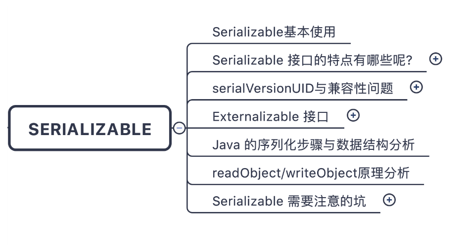
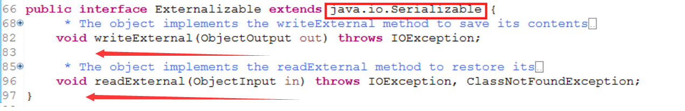
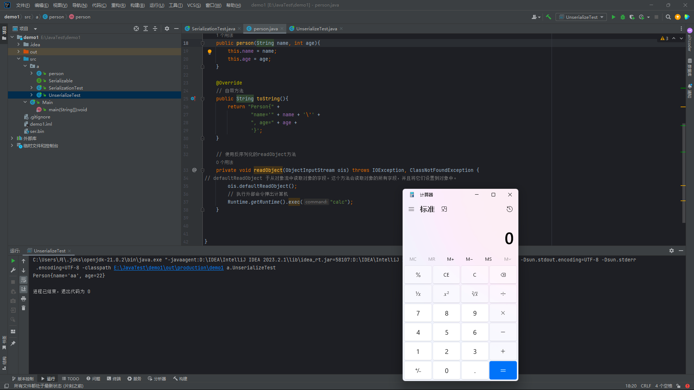

<!DOCTYPE html><html lang="zh-CN"><head><meta charset="UTF-8"><meta name="viewport" content="width=device-width,initial-scale=1,maximum-scale=2"><meta name="theme-color" content="#FFF"><link rel="apple-touch-icon" sizes="180x180" href="/xiaodengnulibianqiang/images/apple-touch-icon.png"><link rel="icon" type="image/ico" sizes="32x32" href="/xiaodengnulibianqiang/images/favicon.ico"><meta http-equiv="Cache-Control" content="no-transform"><meta http-equiv="Cache-Control" content="no-siteapp"><link rel="alternate" type="application/rss+xml" href="https://github.com/xiaodengnulibianqiang/rss.xml"><link rel="alternate" type="application/atom+xml" href="https://github.com/xiaodengnulibianqiang/atom.xml"><link rel="alternate" type="application/json" href="https://github.com/xiaodengnulibianqiang/feed.json"><link rel="stylesheet" href="//fonts.googleapis.com/css?family=Mulish:300,300italic,400,400italic,700,700italic%7CFredericka%20the%20Great:300,300italic,400,400italic,700,700italic%7CNoto%20Serif%20JP:300,300italic,400,400italic,700,700italic%7CNoto%20Serif%20SC:300,300italic,400,400italic,700,700italic%7CInconsolata:300,300italic,400,400italic,700,700italic&display=swap&subset=latin,latin-ext"><link rel="stylesheet" href="/xiaodengnulibianqiang/css/app.css?v=0.2.5"><meta name="keywords" content="java,git,springcloud"><link rel="canonical" href="https://github.com/xiaodengnulibianqiang/2023/05/01/%E5%8F%8D%E5%BA%8F%E5%88%97%E5%8C%96/"><title>Java--反序列化 - Java | SABER = = 你越安静 你听到的就越多</title><meta name="generator" content="Hexo 7.3.0"></head><body itemscope itemtype="http://schema.org/WebPage"><div id="loading"><div class="cat"><div class="body"></div><div class="head"><div class="face"></div></div><div class="foot"><div class="tummy-end"></div><div class="bottom"></div><div class="legs left"></div><div class="legs right"></div></div><div class="paw"><div class="hands left"></div><div class="hands right"></div></div></div></div><div id="container"><header id="header" itemscope itemtype="http://schema.org/WPHeader"><div class="inner"><div id="brand"><div class="pjax"><h1 itemprop="name headline">Java--反序列化</h1><div class="meta"><span class="item" title="创建时间：2023-05-01 22:09:49"><span class="icon"><i class="ic i-calendar"></i> </span><span class="text">发表于</span> <time itemprop="dateCreated datePublished" datetime="2023-05-01T22:09:49+08:00">2023-05-01</time></span></div></div></div><nav id="nav"><div class="inner"><div class="toggle"><div class="lines" aria-label="切换导航栏"><span class="line"></span> <span class="line"></span> <span class="line"></span></div></div><ul class="menu"><li class="item title"><a href="/xiaodengnulibianqiang/" rel="start">SABER</a></li></ul><ul class="right"><li class="item theme"><i class="ic i-sun"></i></li><li class="item search"><i class="ic i-search"></i></li></ul></div></nav></div><div id="imgs" class="pjax"><ul><li class="item" data-background-image="https://tva1.sinaimg.cn/large/6833939bly1gipet8c1a2j20zk0m8kct.jpg"></li><li class="item" data-background-image="https://tva1.sinaimg.cn/large/6833939bly1gipexe4oykj20zk0m87ji.jpg"></li><li class="item" data-background-image="https://tva1.sinaimg.cn/large/6833939bly1giclhpw3lwj20zk0m8gvw.jpg"></li><li class="item" data-background-image="https://tva1.sinaimg.cn/large/6833939bly1giclhfehz7j20zk0m8u0x.jpg"></li><li class="item" data-background-image="https://tva1.sinaimg.cn/large/6833939bly1gipew28b65j20zk0m8hdt.jpg"></li><li class="item" data-background-image="https://tva1.sinaimg.cn/large/6833939bly1gipexw3o58j20zk0m8e81.jpg"></li></ul></div></header><div id="waves"><svg class="waves" xmlns="http://www.w3.org/2000/svg" xmlns:xlink="http://www.w3.org/1999/xlink" viewBox="0 24 150 28" preserveAspectRatio="none" shape-rendering="auto"><defs><path id="gentle-wave" d="M-160 44c30 0 58-18 88-18s 58 18 88 18 58-18 88-18 58 18 88 18 v44h-352z"/></defs><g class="parallax"><use xlink:href="#gentle-wave" x="48" y="0"/><use xlink:href="#gentle-wave" x="48" y="3"/><use xlink:href="#gentle-wave" x="48" y="5"/><use xlink:href="#gentle-wave" x="48" y="7"/></g></svg></div><main><div class="inner"><div id="main" class="pjax"><div class="article wrap"><div class="breadcrumb" itemscope itemtype="https://schema.org/BreadcrumbList"><i class="ic i-home"></i> <span><a href="/xiaodengnulibianqiang/">首页</a></span><i class="ic i-angle-right"></i> <span class="current" itemprop="itemListElement" itemscope itemtype="https://schema.org/ListItem"><a href="/xiaodengnulibianqiang/categories/Java/" itemprop="item" rel="index" title="分类于 Java"><span itemprop="name">Java</span></a><meta itemprop="position" content="1"></span></div><article itemscope itemtype="http://schema.org/Article" class="post block" lang="zh-CN"><link itemprop="mainEntityOfPage" href="https://github.com/xiaodengnulibianqiang/2023/05/01/%E5%8F%8D%E5%BA%8F%E5%88%97%E5%8C%96/"><span hidden itemprop="author" itemscope itemtype="http://schema.org/Person"><meta itemprop="image" content="/xiaodengnulibianqiang/images/avatar.jpg"><meta itemprop="name" content="月"><meta itemprop="description" content="你越安静 你听到的就越多, 欢迎来到月的个人博客!"></span><span hidden itemprop="publisher" itemscope itemtype="http://schema.org/Organization"><meta itemprop="name" content=""></span><div class="body md" itemprop="articleBody"><p>序列化其实就是将数据转化成一种可逆的数据结构，自然，逆向的过程就叫做反序列化，序列化与反序列化的根本目的是数据的传输</p><h2 id="序列化以反序列化"><a class="anchor" href="#序列化以反序列化">#</a> 序列化以反序列化</h2><p><strong>Java 序列化</strong>是指把 Java 对象转换为字节序列的过程，将数据分解成字节流以便存储在文件中或在网络上传输；而<strong> Java 反序列化</strong>是指把字节序列恢复为 Java 对象的过程，打开字节流并重构对象</p><p></p><figure class="highlight arduino"><table><tr><td class="gutter"><pre><span class="line">1</span><br><span class="line">2</span><br></pre></td><td class="code"><pre><span class="line">序列化：对象 -&gt; 字符串(字节流)</span><br><span class="line">反序列化：字符串(字节流) -&gt; 对象</span><br></pre></td></tr></table></figure><p></p><blockquote><p>比如：现在我们都会在淘宝上买桌子，桌子这种很不规则的东西，该怎么从一个城市运输到另一个城市，这时候一般都会把它拆掉成板子，再装到箱子里面，就可以快递寄出去了，这个过程就类似我们的序列化的过程（把数据转化为可以存储或者传输的形式）。当买家收到货后，就需要自己把这些板子组装成桌子的样子，这个过程就像反序列的过程（转化成当初的数据对象）</p></blockquote><h3 id="objectoutputstream-序列化"><a class="anchor" href="#objectoutputstream-序列化">#</a> <code>ObjectOutputStream</code> 序列化</h3><p></p><figure class="highlight java"><table><tr><td class="gutter"><pre><span class="line">1</span><br><span class="line">2</span><br><span class="line">3</span><br><span class="line">4</span><br><span class="line">5</span><br></pre></td><td class="code"><pre><span class="line"><span class="comment">// 创建序列化对象oss</span></span><br><span class="line"><span class="type">ObjectOutputStream</span> <span class="variable">oos</span> <span class="operator">=</span> <span class="keyword">new</span> <span class="title class_">ObjectOutputStream</span>(<span class="keyword">new</span> <span class="title class_">FileOutputStream</span>(<span class="string">&quot;ser.bin&quot;</span>));</span><br><span class="line"><span class="comment">// 创建好反序列化对象oss后使用ObjectOutputStream类自带的writeObject方法,</span></span><br><span class="line"><span class="comment">//将指定对象序列化写入输出流  writeObject方法传入的对象会转化 为字节流将对象的状态保存到文件中</span></span><br><span class="line">oos.writeObject(obj);</span><br></pre></td></tr></table></figure><p></p><h3 id="objectinputstream-反序列化"><a class="anchor" href="#objectinputstream-反序列化">#</a> <code>ObjectInputStream</code> 反序列化</h3><p></p><figure class="highlight java"><table><tr><td class="gutter"><pre><span class="line">1</span><br><span class="line">2</span><br><span class="line">3</span><br><span class="line">4</span><br><span class="line">5</span><br><span class="line">6</span><br></pre></td><td class="code"><pre><span class="line"><span class="type">ObjectInputStream</span> <span class="variable">ois</span> <span class="operator">=</span> <span class="keyword">new</span> <span class="title class_">ObjectInputStream</span>(<span class="keyword">new</span> <span class="title class_">FileInputStream</span>(Filename));</span><br><span class="line">     <span class="comment">// 调用反序列化对象中的readObject从输入流中读取对象的字节流，并将其反序列化为对象。</span></span><br><span class="line">     <span class="comment">// 读取对象的字节表示形式，并将其转换为Java对象</span></span><br><span class="line">     <span class="type">Object</span> <span class="variable">obj</span> <span class="operator">=</span> ois.readObject();</span><br><span class="line">     <span class="comment">// 返回 反序列化后的对象</span></span><br><span class="line">     <span class="keyword">return</span> obj;</span><br></pre></td></tr></table></figure><p></p><h3 id="为什么需要序列化"><a class="anchor" href="#为什么需要序列化">#</a> <strong>为什么需要序列化</strong></h3><p>网站中两个进程进行远程通信，互相发送各种类型的数据，图片 视频 文档，这些数据会以二进制序列形式进行传递，使用 <code>Java</code> 序列化和反序列化实现进程间对象传送</p><ul><li>发送方将发送的数据对象转换为 <code>Java</code> 字节序列，拆分为字节流 序列化过程</li><li>接收方将收到的数据从字节流重构转化为当初的数据读性对象</li></ul><h2 id="serializable接口序列化"><a class="anchor" href="#serializable接口序列化">#</a> <code>Serializable</code> 接口序列化</h2><h3 id="接口serializable"><a class="anchor" href="#接口serializable">#</a> 接口 <code>Serializable</code></h3><blockquote><p>序列化接口 <code>Serializable</code> 接口是一个标识接口，它的主要作用就是标识这个对象是可序列化，<br>接口应该使用 Java 标准库中的 <code>java.io.Serializable</code> 而不是自定义的 <code>a.Serializable</code> 接口</p></blockquote><p>有实现了 <code>Serializable</code> 或者 <code>Externalizable</code> 接口的<strong>类的对象</strong>才能被序列化为字节序列。（不是则会抛出异常；实现 <code>Serializable</code> 接口，类表明它是可序列化的，可以被 <code>ObjectOutputStream</code> 序列化，以及被 <code>ObjectInputStream</code> 反序列化</p><p></p><figure class="highlight java"><table><tr><td class="gutter"><pre><span class="line">1</span><br><span class="line">2</span><br><span class="line">3</span><br><span class="line">4</span><br><span class="line">5</span><br><span class="line">6</span><br></pre></td><td class="code"><pre><span class="line"><span class="comment">// 实现Serializable 接口的类才可以被序列化/反序列化,自定义的无法使用需要使用库内自带的</span></span><br><span class="line"></span><br><span class="line"><span class="keyword">public</span> <span class="keyword">interface</span> <span class="title class_">Serializable</span> &#123;</span><br><span class="line"><span class="comment">// 实现即可无须写入什么东西</span></span><br><span class="line">&#125;</span><br><span class="line"></span><br></pre></td></tr></table></figure><p></p><p></p><h3 id="实现代码"><a class="anchor" href="#实现代码">#</a> 实现代码</h3><p>person.java <strong>实现对象类</strong></p><p></p><figure class="highlight java"><table><tr><td class="gutter"><pre><span class="line">1</span><br><span class="line">2</span><br><span class="line">3</span><br><span class="line">4</span><br><span class="line">5</span><br><span class="line">6</span><br><span class="line">7</span><br><span class="line">8</span><br><span class="line">9</span><br><span class="line">10</span><br><span class="line">11</span><br><span class="line">12</span><br><span class="line">13</span><br><span class="line">14</span><br><span class="line">15</span><br><span class="line">16</span><br><span class="line">17</span><br><span class="line">18</span><br><span class="line">19</span><br><span class="line">20</span><br><span class="line">21</span><br><span class="line">22</span><br><span class="line">23</span><br><span class="line">24</span><br><span class="line">25</span><br><span class="line">26</span><br><span class="line">27</span><br><span class="line">28</span><br></pre></td><td class="code"><pre><span class="line"><span class="keyword">import</span> java.io.Serializable; <span class="comment">// 需要实现的是自带的接口</span></span><br><span class="line"></span><br><span class="line"><span class="comment">// 类实现Serializable接口才能序列化</span></span><br><span class="line"><span class="keyword">public</span> <span class="keyword">class</span> <span class="title class_">person</span> <span class="keyword">implements</span> <span class="title class_">Serializable</span> &#123;</span><br><span class="line"></span><br><span class="line">    <span class="keyword">private</span> String name;</span><br><span class="line">    <span class="keyword">private</span> <span class="type">int</span> age;</span><br><span class="line"></span><br><span class="line">    <span class="keyword">public</span> <span class="title function_">person</span><span class="params">()</span>&#123;</span><br><span class="line"></span><br><span class="line">    &#125;</span><br><span class="line">    <span class="comment">// 有参构造器</span></span><br><span class="line">    <span class="keyword">public</span> <span class="title function_">person</span><span class="params">(String name, <span class="type">int</span> age)</span>&#123;</span><br><span class="line">        <span class="built_in">this</span>.name = name;</span><br><span class="line">        <span class="built_in">this</span>.age = age;</span><br><span class="line">    &#125;</span><br><span class="line"></span><br><span class="line">    <span class="meta">@Override</span></span><br><span class="line">    <span class="comment">// 自带方法</span></span><br><span class="line">    <span class="keyword">public</span> String <span class="title function_">toString</span><span class="params">()</span>&#123;</span><br><span class="line">        <span class="keyword">return</span> <span class="string">&quot;Person&#123;&quot;</span> +</span><br><span class="line">                <span class="string">&quot;name=&#x27;&quot;</span> + name + <span class="string">&#x27;\&#x27;&#x27;</span> +</span><br><span class="line">                <span class="string">&quot;, age=&quot;</span> + age +</span><br><span class="line">                <span class="string">&#x27;&#125;&#x27;</span>;</span><br><span class="line">    &#125;</span><br><span class="line"></span><br><span class="line">&#125;</span><br><span class="line"></span><br></pre></td></tr></table></figure><p></p><p>SerializationTest.java <strong>序列化文件类</strong></p><p></p><figure class="highlight java"><table><tr><td class="gutter"><pre><span class="line">1</span><br><span class="line">2</span><br><span class="line">3</span><br><span class="line">4</span><br><span class="line">5</span><br><span class="line">6</span><br><span class="line">7</span><br><span class="line">8</span><br><span class="line">9</span><br><span class="line">10</span><br><span class="line">11</span><br><span class="line">12</span><br><span class="line">13</span><br><span class="line">14</span><br><span class="line">15</span><br><span class="line">16</span><br><span class="line">17</span><br><span class="line">18</span><br><span class="line">19</span><br><span class="line">20</span><br><span class="line">21</span><br><span class="line">22</span><br><span class="line">23</span><br><span class="line">24</span><br><span class="line">25</span><br><span class="line">26</span><br><span class="line">27</span><br><span class="line">28</span><br><span class="line">29</span><br><span class="line">30</span><br><span class="line">31</span><br><span class="line">32</span><br></pre></td><td class="code"><pre><span class="line"><span class="keyword">import</span> java.io.FileOutputStream;</span><br><span class="line"><span class="keyword">import</span> java.io.IOException;</span><br><span class="line"><span class="keyword">import</span> java.io.ObjectOutput;</span><br><span class="line"><span class="keyword">import</span> java.io.ObjectOutputStream;</span><br><span class="line"></span><br><span class="line"><span class="keyword">public</span> <span class="keyword">class</span> <span class="title class_">SerializationTest</span> &#123;</span><br><span class="line"></span><br><span class="line">    <span class="comment">// 静态方法将传入的对象序列化并写入到ser.bin 文件中</span></span><br><span class="line">    <span class="comment">// 并且里面有一个形参用与在下文中使用此方法传递对象进去</span></span><br><span class="line">    <span class="keyword">public</span> <span class="keyword">static</span> <span class="keyword">void</span> <span class="title function_">serialize</span><span class="params">(Object obj)</span> <span class="keyword">throws</span> IOException&#123;</span><br><span class="line">        <span class="comment">// 创建序列化对象oss</span></span><br><span class="line">        <span class="type">ObjectOutputStream</span> <span class="variable">oos</span> <span class="operator">=</span> <span class="keyword">new</span> <span class="title class_">ObjectOutputStream</span>(<span class="keyword">new</span> <span class="title class_">FileOutputStream</span>(<span class="string">&quot;ser.bin&quot;</span>));</span><br><span class="line">        <span class="comment">// 创建好反序列化对象oss后使用ObjectOutputStream类自带的writeObject方法,将指定对象序列化写入输出流</span></span><br><span class="line">        <span class="comment">// writeObject方法传入的对象会转化 为字节流将对象的状态保存到文件中</span></span><br><span class="line">        oos.writeObject(obj);</span><br><span class="line">    &#125;</span><br><span class="line"></span><br><span class="line">    <span class="keyword">public</span> <span class="keyword">static</span> <span class="keyword">void</span> <span class="title function_">main</span><span class="params">(String[] args)</span> <span class="keyword">throws</span> Exception&#123;</span><br><span class="line">        <span class="type">person</span> <span class="variable">person</span> <span class="operator">=</span> <span class="keyword">new</span> <span class="title class_">person</span>(<span class="string">&quot;aa&quot;</span>,<span class="number">22</span>); <span class="comment">//实例化类 使用User类 有参构造器</span></span><br><span class="line">        System.out.println(person); <span class="comment">// 打印对象会调用类里面的toString()方法输出值</span></span><br><span class="line">        serialize(person); <span class="comment">// 调用上文序列化方法将实例化的对象传入</span></span><br><span class="line">    &#125;</span><br><span class="line">&#125;</span><br><span class="line"></span><br><span class="line"></span><br><span class="line">-----------------------------------------------</span><br><span class="line"></span><br><span class="line">输出:</span><br><span class="line"></span><br><span class="line">Person&#123;name=<span class="string">&#x27;aa&#x27;</span>, age=<span class="number">22</span>&#125;</span><br><span class="line"></span><br><span class="line"></span><br></pre></td></tr></table></figure><p></p><p>UnserializeTest.java<strong> 反序列化文件类</strong></p><p></p><figure class="highlight java"><table><tr><td class="gutter"><pre><span class="line">1</span><br><span class="line">2</span><br><span class="line">3</span><br><span class="line">4</span><br><span class="line">5</span><br><span class="line">6</span><br><span class="line">7</span><br><span class="line">8</span><br><span class="line">9</span><br><span class="line">10</span><br><span class="line">11</span><br><span class="line">12</span><br><span class="line">13</span><br><span class="line">14</span><br><span class="line">15</span><br><span class="line">16</span><br><span class="line">17</span><br><span class="line">18</span><br><span class="line">19</span><br><span class="line">20</span><br><span class="line">21</span><br><span class="line">22</span><br><span class="line">23</span><br><span class="line">24</span><br><span class="line">25</span><br><span class="line">26</span><br><span class="line">27</span><br><span class="line">28</span><br><span class="line">29</span><br><span class="line">30</span><br><span class="line">31</span><br><span class="line">32</span><br><span class="line">33</span><br></pre></td><td class="code"><pre><span class="line"><span class="keyword">import</span> java.io.FileInputStream;</span><br><span class="line"><span class="keyword">import</span> java.io.IOException;</span><br><span class="line"><span class="keyword">import</span> java.io.ObjectInputStream;</span><br><span class="line"></span><br><span class="line"><span class="keyword">public</span> <span class="keyword">class</span> <span class="title class_">UnserializeTest</span> &#123;</span><br><span class="line">    <span class="comment">// 形参为 文件名</span></span><br><span class="line">    <span class="keyword">public</span> <span class="keyword">static</span> Object <span class="title function_">unserialize</span><span class="params">(String Filename)</span> <span class="keyword">throws</span> IOException, ClassNotFoundException&#123;</span><br><span class="line">        <span class="comment">// 创建一个反序列化对象 ois将其关联到名为Filename的文件输出流</span></span><br><span class="line">        <span class="type">ObjectInputStream</span> <span class="variable">ois</span> <span class="operator">=</span> <span class="keyword">new</span> <span class="title class_">ObjectInputStream</span>(<span class="keyword">new</span> <span class="title class_">FileInputStream</span>(Filename));</span><br><span class="line">        <span class="comment">// 调用反序列化对象中的readObject从输入流中读取对象的字节流，并将其反序列化为对象。</span></span><br><span class="line">        <span class="comment">// 读取对象的字节表示形式，并将其转换为Java对象</span></span><br><span class="line">        <span class="type">Object</span> <span class="variable">obj</span> <span class="operator">=</span> ois.readObject();</span><br><span class="line">        <span class="comment">// 返回 反序列化后的对象</span></span><br><span class="line">        <span class="keyword">return</span> obj;</span><br><span class="line">    &#125;</span><br><span class="line"></span><br><span class="line">    <span class="keyword">public</span> <span class="keyword">static</span> <span class="keyword">void</span> <span class="title function_">main</span><span class="params">(String[] args)</span> <span class="keyword">throws</span> Exception&#123;</span><br><span class="line">        <span class="comment">// 调用上文的unserialize方法传入实参需要被反序列化的文件,然后将其转换为person对象,</span></span><br><span class="line">        <span class="comment">// 先转换 将返回的反序列化后的person对象赋值给了person变量，实现了从文件中恢复对象的操作。</span></span><br><span class="line">        <span class="type">person</span> <span class="variable">person</span> <span class="operator">=</span> (person)unserialize(<span class="string">&quot;ser.bin&quot;</span>);</span><br><span class="line"></span><br><span class="line">        <span class="comment">// 打印该person转换后的对象，这里会调用person类的toString()方法来输出对象的字符串表示形式。</span></span><br><span class="line">        System.out.println(person);</span><br><span class="line">    &#125;</span><br><span class="line">&#125;</span><br><span class="line"></span><br><span class="line"></span><br><span class="line">-----------------------------------------------</span><br><span class="line"></span><br><span class="line">输出:</span><br><span class="line"></span><br><span class="line">Person&#123;name=<span class="string">&#x27;aa&#x27;</span>, age=<span class="number">22</span>&#125;</span><br><span class="line"></span><br></pre></td></tr></table></figure><p></p><h3 id="序列化注意点"><a class="anchor" href="#序列化注意点">#</a> 序列化注意点</h3><blockquote><p>反序列化过程中，它的父类如果没有实现序列化接口，那么将需要提供无参构造函数来重新创建对象</p></blockquote><p>序列化的对象是已经继承了其他类变成了子类的化，如果父类没有实现接口 <code>Serializable</code> , 那么父类要么选择实现这个接口，要么是提供无参构造器，在反序列化 <code>Child</code> 对象时， <code>Java</code> 会调用 <code>Parent</code> 类的无参构造函数来重新创建 <code>Parent</code> 对象。</p><p></p><figure class="highlight java"><table><tr><td class="gutter"><pre><span class="line">1</span><br><span class="line">2</span><br><span class="line">3</span><br><span class="line">4</span><br><span class="line">5</span><br><span class="line">6</span><br><span class="line">7</span><br><span class="line">8</span><br><span class="line">9</span><br><span class="line">10</span><br><span class="line">11</span><br><span class="line">12</span><br><span class="line">13</span><br><span class="line">14</span><br><span class="line">15</span><br><span class="line">16</span><br><span class="line">17</span><br><span class="line">18</span><br><span class="line">19</span><br><span class="line">20</span><br><span class="line">21</span><br><span class="line">22</span><br><span class="line">23</span><br><span class="line">24</span><br></pre></td><td class="code"><pre><span class="line"><span class="keyword">import</span> java.io.Serializable;</span><br><span class="line"></span><br><span class="line"><span class="keyword">public</span> <span class="keyword">class</span> <span class="title class_">Parent</span> &#123;</span><br><span class="line">    <span class="keyword">private</span> <span class="type">int</span> id;</span><br><span class="line">    </span><br><span class="line">     <span class="keyword">public</span> <span class="title function_">Parent</span><span class="params">()</span> &#123;</span><br><span class="line">        <span class="comment">// 提供无参构造函数</span></span><br><span class="line">    &#125; </span><br><span class="line">    </span><br><span class="line">    <span class="keyword">public</span> <span class="title function_">Parent</span><span class="params">(<span class="type">int</span> id)</span> &#123;</span><br><span class="line">        <span class="built_in">this</span>.id = id;</span><br><span class="line">    &#125;</span><br><span class="line">&#125;</span><br><span class="line"></span><br><span class="line"><span class="comment">//  继承了Parent类并实现了Serializable接口</span></span><br><span class="line"></span><br><span class="line"><span class="keyword">public</span> <span class="keyword">class</span> <span class="title class_">Child</span> <span class="keyword">extends</span> <span class="title class_">Parent</span> <span class="keyword">implements</span> <span class="title class_">Serializable</span> &#123;</span><br><span class="line">    <span class="keyword">private</span> String name;</span><br><span class="line">    </span><br><span class="line">    <span class="keyword">public</span> <span class="title function_">Child</span><span class="params">(String name, <span class="type">int</span> id)</span> &#123;</span><br><span class="line">        <span class="built_in">super</span>(id);</span><br><span class="line">        <span class="built_in">this</span>.name = name;</span><br><span class="line">    &#125;</span><br><span class="line">&#125;</span><br></pre></td></tr></table></figure><p></p><p></p><blockquote><p>实现 <code>Serializable</code> 接口的子类也是可以被序列化的</p></blockquote><p>当一个父类类实现了 <code>Serializable</code> 接口，它的子类也会自动被序列化。这意味着，如果一个父类实现了 <code>Serializable</code> 接口，那么它的所有子类都可以被序列化，无需再单独实现 <code>Serializable</code> 接口；即子类也被视为可序列化的。这样可以确保整个继承层次结构在序列化和反序列化过程中的一致性。</p><p></p><figure class="highlight java"><table><tr><td class="gutter"><pre><span class="line">1</span><br><span class="line">2</span><br><span class="line">3</span><br><span class="line">4</span><br><span class="line">5</span><br><span class="line">6</span><br><span class="line">7</span><br><span class="line">8</span><br><span class="line">9</span><br><span class="line">10</span><br><span class="line">11</span><br><span class="line">12</span><br><span class="line">13</span><br><span class="line">14</span><br><span class="line">15</span><br><span class="line">16</span><br><span class="line">17</span><br><span class="line">18</span><br><span class="line">19</span><br><span class="line">20</span><br><span class="line">21</span><br><span class="line">22</span><br><span class="line">23</span><br></pre></td><td class="code"><pre><span class="line"><span class="keyword">import</span> java.io.Serializable;</span><br><span class="line"></span><br><span class="line"><span class="keyword">public</span> <span class="keyword">class</span> <span class="title class_">Parent</span> <span class="keyword">implements</span> <span class="title class_">Serializable</span> &#123;</span><br><span class="line">    <span class="keyword">private</span> <span class="type">int</span> id;</span><br><span class="line">    </span><br><span class="line">    <span class="keyword">public</span> <span class="title function_">Parent</span><span class="params">(<span class="type">int</span> id)</span> &#123;</span><br><span class="line">        <span class="built_in">this</span>.id = id;</span><br><span class="line">    &#125;</span><br><span class="line">    </span><br><span class="line">    <span class="comment">// 其他类内容</span></span><br><span class="line">&#125;</span><br><span class="line"></span><br><span class="line"><span class="keyword">public</span> <span class="keyword">class</span> <span class="title class_">Child</span> <span class="keyword">extends</span> <span class="title class_">Parent</span> &#123;</span><br><span class="line">    <span class="keyword">private</span> String name;</span><br><span class="line">    </span><br><span class="line">    <span class="keyword">public</span> <span class="title function_">Child</span><span class="params">(String name, <span class="type">int</span> id)</span> &#123;</span><br><span class="line">        <span class="built_in">super</span>(id);</span><br><span class="line">        <span class="built_in">this</span>.name = name;</span><br><span class="line">    &#125;</span><br><span class="line">    </span><br><span class="line">    <span class="comment">// 其他类内容</span></span><br><span class="line">&#125;</span><br><span class="line"></span><br></pre></td></tr></table></figure><p></p><blockquote><p>静态成员变量是不能被序列化 序列化是针对对象属性的，而静态成员变量是属于类的</p></blockquote><p>静态成员变量属于类级别而不是实例级别，它们不会被包含在序列化的过程中。当对象被序列化时，只有实例变量会被保存到序列化的数据流中，静态成员变量不会被包含在序列化的数据中，。如果需要在序列化过程中保存静态成员变量的状态，可以通过自定义序列化和反序列化方法来实现。</p><p></p><figure class="highlight java"><table><tr><td class="gutter"><pre><span class="line">1</span><br><span class="line">2</span><br><span class="line">3</span><br><span class="line">4</span><br><span class="line">5</span><br><span class="line">6</span><br><span class="line">7</span><br><span class="line">8</span><br><span class="line">9</span><br><span class="line">10</span><br><span class="line">11</span><br><span class="line">12</span><br><span class="line">13</span><br><span class="line">14</span><br><span class="line">15</span><br><span class="line">16</span><br><span class="line">17</span><br><span class="line">18</span><br></pre></td><td class="code"><pre><span class="line"><span class="keyword">import</span> java.io.Serializable; <span class="comment">// 导入Serializable接口</span></span><br><span class="line"></span><br><span class="line"><span class="keyword">public</span> <span class="keyword">class</span> <span class="title class_">MyClass</span> <span class="keyword">implements</span> <span class="title class_">Serializable</span> &#123; <span class="comment">// MyClass类实现Serializable接口</span></span><br><span class="line">    <span class="keyword">private</span> <span class="keyword">static</span> <span class="type">int</span> <span class="variable">staticVar</span> <span class="operator">=</span> <span class="number">10</span>; <span class="comment">// 静态成员变量staticVar 不会被序列化</span></span><br><span class="line">    <span class="keyword">private</span> <span class="type">int</span> instanceVar; <span class="comment">// 实例成员变量instanceVar</span></span><br><span class="line">    </span><br><span class="line">    <span class="keyword">public</span> <span class="title function_">MyClass</span><span class="params">(<span class="type">int</span> instanceVar)</span> &#123; <span class="comment">// MyClass类的构造函数</span></span><br><span class="line">        <span class="built_in">this</span>.instanceVar = instanceVar; <span class="comment">// 初始化实例成员变量instanceVar</span></span><br><span class="line">    &#125;</span><br><span class="line">    </span><br><span class="line">    <span class="keyword">public</span> <span class="keyword">static</span> <span class="keyword">void</span> <span class="title function_">main</span><span class="params">(String[] args)</span> &#123; <span class="comment">// 主方法</span></span><br><span class="line">        <span class="type">MyClass</span> <span class="variable">obj</span> <span class="operator">=</span> <span class="keyword">new</span> <span class="title class_">MyClass</span>(<span class="number">20</span>); <span class="comment">// 创建MyClass对象obj</span></span><br><span class="line">        <span class="comment">// 将对象序列化的过程</span></span><br><span class="line">        <span class="comment">// 省略序列化代码</span></span><br><span class="line">    &#125;</span><br><span class="line">&#125;</span><br><span class="line"></span><br><span class="line"></span><br></pre></td></tr></table></figure><p></p><blockquote><p><code>transient</code> 标识的对象成员变量不参与序列化</p></blockquote><p>一个对象的成员变量被标记为 <code>transient</code> 时，在对象进行序列化时，这些被标记的成员变量将不会被序列化，即它们的值不会被保存到序列化的数据流中。只会参与这个过程并输出对应数据类型的默认值， <code>int</code> 类型输出 ** <code>0</code> ** , 但原始对象中的值并没有改变，仍然是 ** <code>30</code> **，只要添加了 <code>transient</code> ，序列化运行时会跳过该字段的处理。</p><p></p><figure class="highlight java"><table><tr><td class="gutter"><pre><span class="line">1</span><br><span class="line">2</span><br><span class="line">3</span><br><span class="line">4</span><br><span class="line">5</span><br><span class="line">6</span><br><span class="line">7</span><br><span class="line">8</span><br><span class="line">9</span><br><span class="line">10</span><br><span class="line">11</span><br><span class="line">12</span><br><span class="line">13</span><br><span class="line">14</span><br><span class="line">15</span><br><span class="line">16</span><br><span class="line">17</span><br><span class="line">18</span><br><span class="line">19</span><br><span class="line">20</span><br><span class="line">21</span><br><span class="line">22</span><br><span class="line">23</span><br><span class="line">24</span><br><span class="line">25</span><br><span class="line">26</span><br><span class="line">27</span><br><span class="line">28</span><br><span class="line">29</span><br><span class="line">30</span><br><span class="line">31</span><br><span class="line">32</span><br><span class="line">33</span><br><span class="line">34</span><br><span class="line">35</span><br><span class="line">36</span><br><span class="line">37</span><br><span class="line">38</span><br><span class="line">39</span><br><span class="line">40</span><br><span class="line">41</span><br><span class="line">42</span><br><span class="line">43</span><br><span class="line">44</span><br><span class="line">45</span><br><span class="line">46</span><br><span class="line">47</span><br><span class="line">48</span><br><span class="line">49</span><br><span class="line">50</span><br><span class="line">51</span><br><span class="line">52</span><br><span class="line">53</span><br><span class="line">54</span><br><span class="line">55</span><br><span class="line">56</span><br><span class="line">57</span><br><span class="line">58</span><br><span class="line">59</span><br></pre></td><td class="code"><pre><span class="line"><span class="keyword">package</span> a;</span><br><span class="line"></span><br><span class="line"><span class="keyword">import</span> java.io.*;</span><br><span class="line"></span><br><span class="line"><span class="comment">// 实现 Serializable接口</span></span><br><span class="line"><span class="keyword">class</span> <span class="title class_">Person</span> <span class="keyword">implements</span> <span class="title class_">Serializable</span> &#123;</span><br><span class="line">    <span class="keyword">private</span> String name;</span><br><span class="line">    <span class="keyword">private</span> <span class="keyword">transient</span> <span class="type">int</span> age; <span class="comment">// 使用transient关键字标记age成员变量不被序列化</span></span><br><span class="line"></span><br><span class="line">    <span class="comment">// 构造函数</span></span><br><span class="line">    <span class="keyword">public</span> <span class="title function_">Person</span><span class="params">(String name, <span class="type">int</span> age)</span> &#123;</span><br><span class="line">        <span class="built_in">this</span>.name = name;</span><br><span class="line">        <span class="built_in">this</span>.age = age;</span><br><span class="line">    &#125;</span><br><span class="line"></span><br><span class="line">    <span class="meta">@Override</span></span><br><span class="line">    <span class="keyword">public</span> String <span class="title function_">toString</span><span class="params">()</span> &#123;</span><br><span class="line">        <span class="keyword">return</span> <span class="string">&quot;Person&#123;&quot;</span> +</span><br><span class="line">                <span class="string">&quot;name=&#x27;&quot;</span> + name + <span class="string">&#x27;\&#x27;&#x27;</span> +</span><br><span class="line">                <span class="string">&quot;, age=&quot;</span> + age +</span><br><span class="line">                <span class="string">&#x27;&#125;&#x27;</span>;</span><br><span class="line">    &#125;</span><br><span class="line">&#125;</span><br><span class="line"></span><br><span class="line"><span class="keyword">public</span> <span class="keyword">class</span> <span class="title class_">SerializationExample</span> &#123;</span><br><span class="line">    <span class="keyword">public</span> <span class="keyword">static</span> <span class="keyword">void</span> <span class="title function_">main</span><span class="params">(String[] args)</span> &#123;</span><br><span class="line">        <span class="comment">// 实例化类person</span></span><br><span class="line">        <span class="type">Person</span> <span class="variable">person</span> <span class="operator">=</span> <span class="keyword">new</span> <span class="title class_">Person</span>(<span class="string">&quot;Alice&quot;</span>, <span class="number">30</span>);</span><br><span class="line"></span><br><span class="line">        <span class="keyword">try</span> &#123;</span><br><span class="line">            <span class="comment">// 将对象序列化到文件</span></span><br><span class="line">            <span class="type">ObjectOutputStream</span> <span class="variable">out</span> <span class="operator">=</span> <span class="keyword">new</span> <span class="title class_">ObjectOutputStream</span>(<span class="keyword">new</span> <span class="title class_">FileOutputStream</span>(<span class="string">&quot;person.ser&quot;</span>));</span><br><span class="line">            out.writeObject(person);</span><br><span class="line">            out.close();</span><br><span class="line"></span><br><span class="line">            <span class="comment">// 从文件中反序列化对象</span></span><br><span class="line">            <span class="type">ObjectInputStream</span> <span class="variable">in</span> <span class="operator">=</span> <span class="keyword">new</span> <span class="title class_">ObjectInputStream</span>(<span class="keyword">new</span> <span class="title class_">FileInputStream</span>(<span class="string">&quot;person.ser&quot;</span>));</span><br><span class="line">            <span class="type">Person</span> <span class="variable">deserializedPerson</span> <span class="operator">=</span> (Person) in.readObject();</span><br><span class="line">            in.close();</span><br><span class="line"></span><br><span class="line">            <span class="comment">// 输出反序列化后的对象</span></span><br><span class="line">            System.out.println(deserializedPerson);</span><br><span class="line">        &#125; <span class="keyword">catch</span> (IOException | ClassNotFoundException e) &#123;</span><br><span class="line">            e.printStackTrace();</span><br><span class="line">        &#125;</span><br><span class="line">    &#125;</span><br><span class="line">&#125;</span><br><span class="line"></span><br><span class="line"></span><br><span class="line">--------------------------------------</span><br><span class="line"></span><br><span class="line">Person&#123;name=<span class="string">&#x27;Alice&#x27;</span>, age=<span class="number">0</span>&#125;</span><br><span class="line"></span><br><span class="line"><span class="comment">// 0 就是age默认的的值,但实际的数据并没有受到影响</span></span><br><span class="line"><span class="comment">// 这在某些情况下很有用，比如某些敏感信息或临时数据不需要被序列化保存</span></span><br><span class="line"></span><br><span class="line"></span><br><span class="line"></span><br><span class="line"></span><br></pre></td></tr></table></figure><p></p><h2 id="externalizable接口序列化"><a class="anchor" href="#externalizable接口序列化">#</a> <code>Externalizable</code> 接口序列化</h2><p>参考文章:</p><p><span class="exturl" data-url="aHR0cHM6Ly9jbG91ZC50ZW5jZW50LmNvbS9kZXZlbG9wZXIvYXJ0aWNsZS8xMTMwMDI1">Java 序列化之 Externalizable - 腾讯云开发者社区 - 腾讯云 (tencent.com)</span></p><h3 id="接口externalizable"><a class="anchor" href="#接口externalizable">#</a> 接口 <code>Externalizable</code></h3><blockquote><p>JDK 中除了提供 <code>Serializable</code> 序列化接口外，还提供了另一个序列化接口 <code>Externalizable</code> ，使用该接口之后，之前基于 <code>Serializable</code> 接口的序列化机制就将失效。 <code>Externalizable</code> 的序列化机制优先级要高于 <code>Serializable</code></p></blockquote><p>源码中 <code>Externalizable</code> 接口继承了 <code>Serializable</code> 接口，并定义了两个方法，实现此接口后，类中属性字段使用 <code>transient</code> 和不使用没有任何区别</p><p></p><figure class="highlight java"><table><tr><td class="gutter"><pre><span class="line">1</span><br><span class="line">2</span><br></pre></td><td class="code"><pre><span class="line">writeExterna(写入 userName 和 password 两个数据)</span><br><span class="line">readExternal(读取反序列化的信息并赋值给 userName 和 password 两个字段)</span><br></pre></td></tr></table></figure><p></p><p></p><h3 id="实现代码-2"><a class="anchor" href="#实现代码-2">#</a> 实现代码</h3><p>本文介绍了 Java 中的序列化和反序列化机制。Java 序列化是指将 Java 对象转换为字节序列的过程，以便存储在文件中或在网络上传输；而 Java 反序列化是指将字节序列恢复为 Java 对象的过程。序列化和反序列化的过程中，需要使用 ObjectOutputStream 和 ObjectInputStream 类来实现。文章还提到了序列化的原因，如远程过程调用和传输数据时需要将数据序列化为二进制形式。此外，文章还介绍了 Serializable 接口和 Externalizable 接口的使用，以及在序列化过程中需要注意的事项，如父类没有实现序列化接口时需要提供无参构造函数，静态成员变量不能被序列化等。</p><p>User.java</p><p></p><figure class="highlight java"><table><tr><td class="gutter"><pre><span class="line">1</span><br><span class="line">2</span><br><span class="line">3</span><br><span class="line">4</span><br><span class="line">5</span><br><span class="line">6</span><br><span class="line">7</span><br><span class="line">8</span><br><span class="line">9</span><br><span class="line">10</span><br><span class="line">11</span><br><span class="line">12</span><br><span class="line">13</span><br><span class="line">14</span><br><span class="line">15</span><br><span class="line">16</span><br><span class="line">17</span><br><span class="line">18</span><br><span class="line">19</span><br><span class="line">20</span><br><span class="line">21</span><br><span class="line">22</span><br><span class="line">23</span><br><span class="line">24</span><br><span class="line">25</span><br><span class="line">26</span><br><span class="line">27</span><br><span class="line">28</span><br><span class="line">29</span><br><span class="line">30</span><br><span class="line">31</span><br><span class="line">32</span><br><span class="line">33</span><br><span class="line">34</span><br><span class="line">35</span><br><span class="line">36</span><br><span class="line">37</span><br><span class="line">38</span><br><span class="line">39</span><br><span class="line">40</span><br><span class="line">41</span><br><span class="line">42</span><br><span class="line">43</span><br><span class="line">44</span><br><span class="line">45</span><br><span class="line">46</span><br><span class="line">47</span><br><span class="line">48</span><br></pre></td><td class="code"><pre><span class="line"><span class="keyword">package</span> a;</span><br><span class="line"></span><br><span class="line"><span class="keyword">import</span> java.io.Externalizable;</span><br><span class="line"><span class="keyword">import</span> java.io.IOException;</span><br><span class="line"><span class="keyword">import</span> java.io.ObjectInput;</span><br><span class="line"><span class="keyword">import</span> java.io.ObjectOutput;</span><br><span class="line"></span><br><span class="line"><span class="keyword">public</span> <span class="keyword">class</span> <span class="title class_">User</span> <span class="keyword">implements</span> <span class="title class_">Externalizable</span> &#123;</span><br><span class="line"></span><br><span class="line">    <span class="keyword">private</span> <span class="keyword">static</span> <span class="keyword">final</span> <span class="type">long</span> <span class="variable">serialVersionUID</span> <span class="operator">=</span> <span class="number">1318824539146791009L</span>;</span><br><span class="line">    <span class="keyword">private</span> String userName;</span><br><span class="line">    <span class="keyword">private</span> <span class="keyword">transient</span> String password; <span class="comment">// 被标识不参与序列化,但是继承了Externalizable就无区别</span></span><br><span class="line"></span><br><span class="line">    <span class="keyword">public</span> String <span class="title function_">getUserName</span><span class="params">()</span> &#123;</span><br><span class="line">        <span class="keyword">return</span> userName;</span><br><span class="line">    &#125;</span><br><span class="line">    <span class="keyword">public</span> <span class="keyword">void</span> <span class="title function_">setUserName</span><span class="params">(String userName)</span> &#123;</span><br><span class="line">        <span class="built_in">this</span>.userName = userName;</span><br><span class="line">    &#125;</span><br><span class="line">    <span class="keyword">public</span> String <span class="title function_">getPassword</span><span class="params">()</span> &#123;</span><br><span class="line">        <span class="keyword">return</span> password;</span><br><span class="line">    &#125;</span><br><span class="line">    <span class="keyword">public</span> <span class="keyword">void</span> <span class="title function_">setPassword</span><span class="params">(String password)</span> &#123;</span><br><span class="line">        <span class="built_in">this</span>.password = password;</span><br><span class="line">    &#125;</span><br><span class="line">    <span class="meta">@Override</span></span><br><span class="line">    <span class="keyword">public</span> String <span class="title function_">toString</span><span class="params">()</span> &#123;</span><br><span class="line">    </span><br><span class="line">     <span class="comment">// 输出自带的方法打印字符串查看效果</span></span><br><span class="line">     </span><br><span class="line">        <span class="keyword">return</span> <span class="string">&quot;User [userName=&quot;</span> + userName + <span class="string">&quot;, password=&quot;</span> + password + <span class="string">&quot;]&quot;</span>;</span><br><span class="line">    &#125;</span><br><span class="line">    </span><br><span class="line">    <span class="comment">// 下面的两个方法是需要填写数据的</span></span><br><span class="line">    <span class="comment">// 在 writeExternal 方法中写入 userName 和 password 两个数据，</span></span><br><span class="line">    <span class="comment">//  readExternal 方法中读取反序列化的信息并赋值给 userName 和 password 两个字段。</span></span><br><span class="line">    </span><br><span class="line">    <span class="meta">@Override</span></span><br><span class="line">     <span class="keyword">public</span> <span class="keyword">void</span> <span class="title function_">writeExternal</span><span class="params">(ObjectOutput out)</span> <span class="keyword">throws</span> IOException &#123;</span><br><span class="line">        out.writeObject(<span class="built_in">this</span>.userName); <span class="comment">// 保存属性</span></span><br><span class="line">        out.writeObject(<span class="built_in">this</span>.password);</span><br><span class="line">    &#125;</span><br><span class="line">    <span class="meta">@Override</span></span><br><span class="line">    <span class="keyword">public</span> <span class="keyword">void</span> <span class="title function_">readExternal</span><span class="params">(ObjectInput in)</span> <span class="keyword">throws</span> IOException, ClassNotFoundException &#123;</span><br><span class="line">        <span class="built_in">this</span>.userName = in.readObject().toString(); <span class="comment">// 读取属性</span></span><br><span class="line">        <span class="built_in">this</span>.password = in.readObject().toString();</span><br><span class="line">    &#125;</span><br><span class="line">&#125;</span><br></pre></td></tr></table></figure><p></p><p>Test.java</p><p></p><figure class="highlight java"><table><tr><td class="gutter"><pre><span class="line">1</span><br><span class="line">2</span><br><span class="line">3</span><br><span class="line">4</span><br><span class="line">5</span><br><span class="line">6</span><br><span class="line">7</span><br><span class="line">8</span><br><span class="line">9</span><br><span class="line">10</span><br><span class="line">11</span><br><span class="line">12</span><br><span class="line">13</span><br><span class="line">14</span><br><span class="line">15</span><br><span class="line">16</span><br><span class="line">17</span><br><span class="line">18</span><br><span class="line">19</span><br><span class="line">20</span><br><span class="line">21</span><br><span class="line">22</span><br><span class="line">23</span><br><span class="line">24</span><br><span class="line">25</span><br><span class="line">26</span><br><span class="line">27</span><br><span class="line">28</span><br><span class="line">29</span><br><span class="line">30</span><br><span class="line">31</span><br><span class="line">32</span><br><span class="line">33</span><br></pre></td><td class="code"><pre><span class="line"></span><br><span class="line"><span class="keyword">import</span> java.io.*;</span><br><span class="line"></span><br><span class="line"><span class="keyword">public</span> <span class="keyword">class</span> <span class="title class_">Test</span>&#123;</span><br><span class="line">    <span class="keyword">public</span> <span class="keyword">static</span> <span class="keyword">void</span> <span class="title function_">main</span><span class="params">(String[] args)</span> <span class="keyword">throws</span> Exception &#123;</span><br><span class="line"></span><br><span class="line">        <span class="comment">// 创建文件对象给出路径和名称 1.txt 把变量给file</span></span><br><span class="line"></span><br><span class="line">        <span class="type">File</span> <span class="variable">file</span> <span class="operator">=</span> <span class="keyword">new</span> <span class="title class_">File</span>(<span class="string">&quot;d:\\a.user&quot;</span>);</span><br><span class="line">        <span class="comment">// 序列化过程</span></span><br><span class="line">        <span class="type">ObjectOutputStream</span> <span class="variable">oos</span> <span class="operator">=</span> <span class="keyword">new</span> <span class="title class_">ObjectOutputStream</span>(<span class="keyword">new</span> <span class="title class_">FileOutputStream</span>(file));</span><br><span class="line">        <span class="type">User</span> <span class="variable">user1</span> <span class="operator">=</span> <span class="keyword">new</span> <span class="title class_">User</span>(); <span class="comment">// 实例化上文的 User类</span></span><br><span class="line">        user1.setUserName(<span class="string">&quot;zhangsan&quot;</span>); <span class="comment">// 赋值</span></span><br><span class="line">        user1.setPassword(<span class="string">&quot;123456&quot;</span>); <span class="comment">// 赋值</span></span><br><span class="line">        oos.writeObject(user1);</span><br><span class="line"></span><br><span class="line"></span><br><span class="line">        <span class="comment">// 反序列化</span></span><br><span class="line">        <span class="type">ObjectInputStream</span> <span class="variable">ois</span> <span class="operator">=</span> <span class="keyword">new</span> <span class="title class_">ObjectInputStream</span>(<span class="keyword">new</span> <span class="title class_">FileInputStream</span>(file));</span><br><span class="line">        <span class="type">User</span> <span class="variable">user2</span> <span class="operator">=</span> (User) ois.readObject();</span><br><span class="line">        System.out.println(user2);</span><br><span class="line">    &#125;</span><br><span class="line">&#125;</span><br><span class="line"></span><br><span class="line"></span><br><span class="line"></span><br><span class="line">-----------------------------------------</span><br><span class="line"></span><br><span class="line">输出:</span><br><span class="line"></span><br><span class="line"></span><br><span class="line">User [userName=zhangsan, password=<span class="number">123456</span>]</span><br><span class="line"></span><br></pre></td></tr></table></figure><p></p><h3 id="序列化注意点-2"><a class="anchor" href="#序列化注意点-2">#</a> 序列化注意点</h3><blockquote><p><code>Externalizable</code> 进行反序列化时，需要有默认的构造方法，有参的构造器是不够的，还需要自己手写一个默认无参的构造器，因为使用 <code>Externalizable</code> 进行反序列化时，需要有默认的构造方法，通过反射先创建出该类的实例，然后再把解析后的属性值，通过反射赋值。</p><p><code>Serializable</code> 接口则不需要单独写默认无参的构造器</p></blockquote><p></p><figure class="highlight java"><table><tr><td class="gutter"><pre><span class="line">1</span><br><span class="line">2</span><br><span class="line">3</span><br><span class="line">4</span><br><span class="line">5</span><br><span class="line">6</span><br><span class="line">7</span><br><span class="line">8</span><br><span class="line">9</span><br><span class="line">10</span><br><span class="line">11</span><br><span class="line">12</span><br><span class="line">13</span><br><span class="line">14</span><br><span class="line">15</span><br><span class="line">16</span><br><span class="line">17</span><br><span class="line">18</span><br><span class="line">19</span><br><span class="line">20</span><br><span class="line">21</span><br><span class="line">22</span><br></pre></td><td class="code"><pre><span class="line"><span class="keyword">public</span> <span class="keyword">class</span> <span class="title class_">User</span> <span class="keyword">implements</span> <span class="title class_">Externalizable</span> &#123;</span><br><span class="line"></span><br><span class="line">    <span class="comment">// 序列ID</span></span><br><span class="line">    <span class="keyword">private</span> <span class="keyword">static</span> <span class="keyword">final</span> <span class="type">long</span> <span class="variable">serialVersionUID</span> <span class="operator">=</span> <span class="number">1318824539146791009L</span>;</span><br><span class="line">    <span class="keyword">private</span> String userName;</span><br><span class="line">    <span class="keyword">private</span> <span class="keyword">transient</span> String password;</span><br><span class="line"></span><br><span class="line">    <span class="comment">// 无参/默认构造器</span></span><br><span class="line">    </span><br><span class="line">    <span class="keyword">public</span> <span class="title function_">User</span><span class="params">()</span>&#123;</span><br><span class="line"></span><br><span class="line">    &#125;</span><br><span class="line"></span><br><span class="line">    <span class="comment">// 有参构造器</span></span><br><span class="line"></span><br><span class="line">    <span class="keyword">public</span> <span class="title function_">User</span><span class="params">(String userName, String password)</span> &#123;</span><br><span class="line">        <span class="built_in">super</span>();</span><br><span class="line">        <span class="built_in">this</span>.userName = userName;</span><br><span class="line">        <span class="built_in">this</span>.password = password;</span><br><span class="line">    &#125;</span><br><span class="line">    </span><br><span class="line">    &#125;</span><br></pre></td></tr></table></figure><p></p><p>User.java</p><p></p><figure class="highlight java"><table><tr><td class="gutter"><pre><span class="line">1</span><br><span class="line">2</span><br><span class="line">3</span><br><span class="line">4</span><br><span class="line">5</span><br><span class="line">6</span><br><span class="line">7</span><br><span class="line">8</span><br><span class="line">9</span><br><span class="line">10</span><br><span class="line">11</span><br><span class="line">12</span><br><span class="line">13</span><br><span class="line">14</span><br><span class="line">15</span><br><span class="line">16</span><br><span class="line">17</span><br><span class="line">18</span><br><span class="line">19</span><br><span class="line">20</span><br><span class="line">21</span><br><span class="line">22</span><br><span class="line">23</span><br><span class="line">24</span><br><span class="line">25</span><br><span class="line">26</span><br><span class="line">27</span><br><span class="line">28</span><br><span class="line">29</span><br><span class="line">30</span><br><span class="line">31</span><br><span class="line">32</span><br><span class="line">33</span><br><span class="line">34</span><br><span class="line">35</span><br><span class="line">36</span><br><span class="line">37</span><br><span class="line">38</span><br><span class="line">39</span><br><span class="line">40</span><br><span class="line">41</span><br><span class="line">42</span><br><span class="line">43</span><br><span class="line">44</span><br><span class="line">45</span><br><span class="line">46</span><br><span class="line">47</span><br><span class="line">48</span><br><span class="line">49</span><br><span class="line">50</span><br><span class="line">51</span><br><span class="line">52</span><br><span class="line">53</span><br></pre></td><td class="code"><pre><span class="line"><span class="keyword">package</span> a;</span><br><span class="line"></span><br><span class="line"><span class="keyword">import</span> java.io.Externalizable;</span><br><span class="line"><span class="keyword">import</span> java.io.IOException;</span><br><span class="line"><span class="keyword">import</span> java.io.ObjectInput;</span><br><span class="line"><span class="keyword">import</span> java.io.ObjectOutput;</span><br><span class="line"></span><br><span class="line"><span class="keyword">public</span> <span class="keyword">class</span> <span class="title class_">User</span> <span class="keyword">implements</span> <span class="title class_">Externalizable</span> &#123;</span><br><span class="line"></span><br><span class="line">    <span class="comment">// 序列ID</span></span><br><span class="line">    <span class="keyword">private</span> <span class="keyword">static</span> <span class="keyword">final</span> <span class="type">long</span> <span class="variable">serialVersionUID</span> <span class="operator">=</span> <span class="number">1318824539146791009L</span>;</span><br><span class="line">    <span class="keyword">private</span> String userName;</span><br><span class="line">    <span class="keyword">private</span> <span class="keyword">transient</span> String password;</span><br><span class="line"></span><br><span class="line">    <span class="comment">// 无参/默认构造器</span></span><br><span class="line">    <span class="keyword">public</span> <span class="title function_">User</span><span class="params">()</span>&#123;</span><br><span class="line"></span><br><span class="line">    &#125;</span><br><span class="line"></span><br><span class="line">    <span class="comment">// 有参构造器</span></span><br><span class="line"></span><br><span class="line">    <span class="keyword">public</span> <span class="title function_">User</span><span class="params">(String userName, String password)</span> &#123;</span><br><span class="line">        <span class="built_in">super</span>();</span><br><span class="line">        <span class="built_in">this</span>.userName = userName;</span><br><span class="line">        <span class="built_in">this</span>.password = password;</span><br><span class="line">    &#125;</span><br><span class="line">    <span class="keyword">public</span> String <span class="title function_">getUserName</span><span class="params">()</span> &#123;</span><br><span class="line">        <span class="keyword">return</span> userName;</span><br><span class="line">    &#125;</span><br><span class="line">    <span class="keyword">public</span> <span class="keyword">void</span> <span class="title function_">setUserName</span><span class="params">(String userName)</span> &#123;</span><br><span class="line">        <span class="built_in">this</span>.userName = userName;</span><br><span class="line">    &#125;</span><br><span class="line">    <span class="keyword">public</span> String <span class="title function_">getPassword</span><span class="params">()</span> &#123;</span><br><span class="line">        <span class="keyword">return</span> password;</span><br><span class="line">    &#125;</span><br><span class="line">    <span class="keyword">public</span> <span class="keyword">void</span> <span class="title function_">setPassword</span><span class="params">(String password)</span> &#123;</span><br><span class="line">        <span class="built_in">this</span>.password = password;</span><br><span class="line">    &#125;</span><br><span class="line">    <span class="meta">@Override</span></span><br><span class="line">    <span class="keyword">public</span> String <span class="title function_">toString</span><span class="params">()</span> &#123;</span><br><span class="line">        <span class="keyword">return</span> <span class="string">&quot;User [userName=&quot;</span> + userName + <span class="string">&quot;, password=&quot;</span> + password + <span class="string">&quot;]&quot;</span>;</span><br><span class="line">    &#125;</span><br><span class="line">    <span class="meta">@Override</span></span><br><span class="line">    <span class="keyword">public</span> <span class="keyword">void</span> <span class="title function_">writeExternal</span><span class="params">(ObjectOutput out)</span> <span class="keyword">throws</span> IOException &#123;</span><br><span class="line">        out.writeObject(<span class="built_in">this</span>.userName);</span><br><span class="line">        out.writeObject(<span class="string">&quot;externalizable:&quot;</span>+<span class="built_in">this</span>.password);</span><br><span class="line">    &#125;</span><br><span class="line">    <span class="meta">@Override</span></span><br><span class="line">    <span class="keyword">public</span> <span class="keyword">void</span> <span class="title function_">readExternal</span><span class="params">(ObjectInput in)</span> <span class="keyword">throws</span> IOException, ClassNotFoundException &#123;</span><br><span class="line">        <span class="built_in">this</span>.userName = (String)in.readObject();</span><br><span class="line">        <span class="built_in">this</span>.password = (String)in.readObject();</span><br><span class="line">    &#125;</span><br><span class="line">&#125;</span><br></pre></td></tr></table></figure><p></p><p>Test.java</p><p></p><figure class="highlight java"><table><tr><td class="gutter"><pre><span class="line">1</span><br><span class="line">2</span><br><span class="line">3</span><br><span class="line">4</span><br><span class="line">5</span><br><span class="line">6</span><br><span class="line">7</span><br><span class="line">8</span><br><span class="line">9</span><br><span class="line">10</span><br><span class="line">11</span><br><span class="line">12</span><br><span class="line">13</span><br><span class="line">14</span><br><span class="line">15</span><br><span class="line">16</span><br><span class="line">17</span><br><span class="line">18</span><br><span class="line">19</span><br><span class="line">20</span><br><span class="line">21</span><br><span class="line">22</span><br><span class="line">23</span><br><span class="line">24</span><br><span class="line">25</span><br><span class="line">26</span><br><span class="line">27</span><br><span class="line">28</span><br><span class="line">29</span><br><span class="line">30</span><br><span class="line">31</span><br><span class="line">32</span><br><span class="line">33</span><br><span class="line">34</span><br><span class="line">35</span><br><span class="line">36</span><br><span class="line">37</span><br><span class="line">38</span><br><span class="line">39</span><br><span class="line">40</span><br><span class="line">41</span><br><span class="line">42</span><br><span class="line">43</span><br><span class="line">44</span><br><span class="line">45</span><br></pre></td><td class="code"><pre><span class="line"><span class="keyword">package</span> a;</span><br><span class="line"></span><br><span class="line"><span class="keyword">import</span> java.io.*;</span><br><span class="line"></span><br><span class="line"><span class="keyword">public</span> <span class="keyword">class</span> <span class="title class_">Test</span> &#123;</span><br><span class="line">    <span class="keyword">public</span> <span class="keyword">static</span> <span class="keyword">void</span> <span class="title function_">main</span><span class="params">(String[] args)</span> <span class="keyword">throws</span> Exception &#123;</span><br><span class="line">        <span class="type">File</span> <span class="variable">file</span> <span class="operator">=</span> <span class="keyword">new</span> <span class="title class_">File</span>(<span class="string">&quot;d:\\a.user&quot;</span>);</span><br><span class="line">        <span class="type">ObjectOutputStream</span> <span class="variable">oos</span> <span class="operator">=</span> <span class="keyword">new</span> <span class="title class_">ObjectOutputStream</span>(<span class="keyword">new</span> <span class="title class_">FileOutputStream</span>(file));</span><br><span class="line">        <span class="comment">// 通过User类的有参构造器</span></span><br><span class="line">        <span class="type">User</span> <span class="variable">user1</span> <span class="operator">=</span> <span class="keyword">new</span> <span class="title class_">User</span>(<span class="string">&quot;zhangsan&quot;</span>, <span class="string">&quot;123456&quot;</span>);</span><br><span class="line">        oos.writeObject(user1); <span class="comment">// 序列对象</span></span><br><span class="line">        System.out.println(oos);</span><br><span class="line"></span><br><span class="line">        <span class="comment">// 将序列化后的数据写入到一个ByteArrayOutputStream中</span></span><br><span class="line">        <span class="type">ByteArrayOutputStream</span> <span class="variable">bos</span> <span class="operator">=</span> <span class="keyword">new</span> <span class="title class_">ByteArrayOutputStream</span>();</span><br><span class="line">        <span class="type">ObjectOutputStream</span> <span class="variable">tempOos</span> <span class="operator">=</span> <span class="keyword">new</span> <span class="title class_">ObjectOutputStream</span>(bos);</span><br><span class="line">        tempOos.writeObject(user1);</span><br><span class="line">        tempOos.close();</span><br><span class="line"></span><br><span class="line">        System.out.println(<span class="string">&quot;-------序列化成功&quot;</span>);</span><br><span class="line"></span><br><span class="line">        <span class="type">ObjectInputStream</span> <span class="variable">ois</span> <span class="operator">=</span> <span class="keyword">new</span> <span class="title class_">ObjectInputStream</span>(<span class="keyword">new</span> <span class="title class_">FileInputStream</span>(file));</span><br><span class="line">        <span class="type">User</span> <span class="variable">user2</span> <span class="operator">=</span> (User) ois.readObject();</span><br><span class="line">        System.out.println(user2);</span><br><span class="line">        System.out.println(<span class="string">&quot;-------反序列化成功&quot;</span>);</span><br><span class="line"></span><br><span class="line">        <span class="comment">// 查看序列化后的数据</span></span><br><span class="line">        <span class="type">byte</span>[] bytes = bos.toByteArray();</span><br><span class="line">        <span class="type">String</span> <span class="variable">serializedData</span> <span class="operator">=</span> <span class="keyword">new</span> <span class="title class_">String</span>(bytes, <span class="string">&quot;UTF-8&quot;</span>);</span><br><span class="line">        System.out.println(serializedData);</span><br><span class="line">    &#125;</span><br><span class="line">&#125;</span><br><span class="line"></span><br><span class="line"></span><br><span class="line"></span><br><span class="line">--------------------------------</span><br><span class="line"></span><br><span class="line">输出:</span><br><span class="line"></span><br><span class="line">java.io.ObjectOutputStream@20ad9418</span><br><span class="line">-------序列化成功</span><br><span class="line">User [userName=zhangsan, password=externalizable:<span class="number">123456</span>]</span><br><span class="line">-------反序列化成功</span><br><span class="line">�� sr a.UserMg�P�a  xptzhangsant externalizable:123456x</span><br><span class="line"></span><br></pre></td></tr></table></figure><p></p><h2 id="序列化安全"><a class="anchor" href="#序列化安全">#</a> 序列化安全</h2><blockquote><p>序列化安全主要是由于 <code>writeObject()</code> <code>readObject()</code> 这两种方法是可以通过开发者重写的，重写的场景一般是这样的</p></blockquote><p>假设有一个名为 <code>MyList</code> 的类，其中定义了一个名为 <code>arr</code> 的数组属性，初始数组长度为 <code>100</code> 。在实际序列化过程中，如果让 arr 属性参与序列化，那么整个长度为 <code>100</code> 的数组都会被序列化，，但是数组中存放的数据只有 50 个数据，，如果整个数组全部序列化的数据量过大且浪费空间，所以需要重写方法自定义序列化过程</p><hr><p>在上文代码的基础上加入重写的 <code>readObject</code> 反序列化方法，然后按照顺序运行序列化程序 <code>SerializationTest.java</code> 再运行反序列化程序 <code>UnserializeTest.java</code> , 会执行重写的方法并且执行外部命令弹出计算机 <code>calc</code> , 这是最理想的情况，但是此情况几乎不会出现</p><ul><li>入口参数中包含可控类，该类有危险方法， <code>readObject</code> 时调用</li><li>入口类参数中包含可控类，该类又调用其他有危险方法的类， <code>readObject</code> 时调用</li><li><strong>构造函数 / 静态代码块等类加载时隐式执行</strong></li></ul><p>person.java <strong>实现对象类</strong></p><p></p><figure class="highlight java"><table><tr><td class="gutter"><pre><span class="line">1</span><br><span class="line">2</span><br><span class="line">3</span><br><span class="line">4</span><br><span class="line">5</span><br><span class="line">6</span><br><span class="line">7</span><br><span class="line">8</span><br><span class="line">9</span><br><span class="line">10</span><br><span class="line">11</span><br><span class="line">12</span><br><span class="line">13</span><br><span class="line">14</span><br><span class="line">15</span><br><span class="line">16</span><br><span class="line">17</span><br><span class="line">18</span><br><span class="line">19</span><br><span class="line">20</span><br><span class="line">21</span><br><span class="line">22</span><br><span class="line">23</span><br><span class="line">24</span><br><span class="line">25</span><br><span class="line">26</span><br><span class="line">27</span><br><span class="line">28</span><br><span class="line">29</span><br><span class="line">30</span><br><span class="line">31</span><br><span class="line">32</span><br><span class="line">33</span><br><span class="line">34</span><br><span class="line">35</span><br><span class="line">36</span><br><span class="line">37</span><br><span class="line">38</span><br></pre></td><td class="code"><pre><span class="line"><span class="keyword">import</span> java.io.IOException;</span><br><span class="line"><span class="keyword">import</span> java.io.ObjectInputStream;</span><br><span class="line"><span class="keyword">import</span> java.io.Serializable; <span class="comment">// 需要实现的是自带的接口</span></span><br><span class="line"></span><br><span class="line"><span class="comment">// 类实现Serializable接口才能序列化</span></span><br><span class="line"><span class="keyword">public</span> <span class="keyword">class</span> <span class="title class_">person</span> <span class="keyword">implements</span> <span class="title class_">Serializable</span> &#123;</span><br><span class="line"></span><br><span class="line">    <span class="keyword">private</span> String name;</span><br><span class="line">    <span class="keyword">private</span> <span class="type">int</span> age;</span><br><span class="line"></span><br><span class="line">    <span class="keyword">public</span> <span class="title function_">person</span><span class="params">()</span>&#123;</span><br><span class="line"></span><br><span class="line">    &#125;</span><br><span class="line">    <span class="comment">// 构造函数</span></span><br><span class="line">    <span class="keyword">public</span> <span class="title function_">person</span><span class="params">(String name, <span class="type">int</span> age)</span>&#123;</span><br><span class="line">        <span class="built_in">this</span>.name = name;</span><br><span class="line">        <span class="built_in">this</span>.age = age;</span><br><span class="line">    &#125;</span><br><span class="line"></span><br><span class="line">    <span class="meta">@Override</span></span><br><span class="line">    <span class="comment">// 自带方法</span></span><br><span class="line">    <span class="keyword">public</span> String <span class="title function_">toString</span><span class="params">()</span>&#123;</span><br><span class="line">        <span class="keyword">return</span> <span class="string">&quot;Person&#123;&quot;</span> +</span><br><span class="line">                <span class="string">&quot;name=&#x27;&quot;</span> + name + <span class="string">&#x27;\&#x27;&#x27;</span> +</span><br><span class="line">                <span class="string">&quot;, age=&quot;</span> + age +</span><br><span class="line">                <span class="string">&#x27;&#125;&#x27;</span>;</span><br><span class="line">    &#125;</span><br><span class="line"></span><br><span class="line">    <span class="comment">// 使用自定义反序列化的readObject方法,形参是指读取序列化的参数,传入的对象就是需要被反序列的东西</span></span><br><span class="line">    <span class="keyword">private</span> <span class="keyword">void</span> <span class="title function_">readObject</span><span class="params">(ObjectInputStream ois)</span> <span class="keyword">throws</span> IOException, ClassNotFoundException &#123;</span><br><span class="line"><span class="comment">// defaultReadObject 于从对象流中读取对象的字段。这个方法会读取对象的所有字段，并且将它们设置到对象中</span></span><br><span class="line"><span class="comment">// 恢复对象的状态。</span></span><br><span class="line">        ois.defaultReadObject();</span><br><span class="line">        <span class="comment">// 执行外部命令弹出计算机</span></span><br><span class="line">        Runtime.getRuntime().exec(<span class="string">&quot;calc&quot;</span>);</span><br><span class="line">    &#125;</span><br><span class="line">&#125;</span><br><span class="line"></span><br></pre></td></tr></table></figure><p></p><p></p></div><footer><div class="meta"><span class="item"><span class="icon"><i class="ic i-calendar-check"></i> </span><span class="text">更新于</span> <time title="修改时间：2024-08-27 23:20:50" itemprop="dateModified" datetime="2024-08-27T23:20:50+08:00">2024-08-27</time></span></div><div id="copyright"><ul><li class="author"><strong>本文作者： </strong>月 <i class="ic i-at"><em>@</em></i></li><li class="link"><strong>本文链接：</strong> <a href="https://github.com/xiaodengnulibianqiang/2023/05/01/%E5%8F%8D%E5%BA%8F%E5%88%97%E5%8C%96/" title="Java--反序列化">https://github.com/xiaodengnulibianqiang/2023/05/01/反序列化/</a></li><li class="license"><strong>版权声明： </strong>本站所有文章除特别声明外，均采用 <span class="exturl" data-url="aHR0cHM6Ly9jcmVhdGl2ZWNvbW1vbnMub3JnL2xpY2Vuc2VzL2J5LW5jLXNhLzQuMC96aC1DTg=="><i class="ic i-creative-commons"><em>(CC)</em></i>BY-NC-SA</span> 许可协议。转载请注明出处！</li></ul></div></footer></article></div><div class="post-nav"><div class="item left"><a href="/xiaodengnulibianqiang/2023/05/01/%E5%A4%9A%E7%BA%BF%E7%A8%8B/" itemprop="url" rel="prev" data-background-image="https:&#x2F;&#x2F;tva1.sinaimg.cn&#x2F;mw690&#x2F;6833939bly1gipexj2jgzj20zk0m8b09.jpg" title="Java--多线程"><span class="type">上一篇</span> <span class="category"><i class="ic i-flag"></i></span><h3>Java--多线程</h3></a></div><div class="item right"><a href="/xiaodengnulibianqiang/2023/10/29/EduSrc/" itemprop="url" rel="next" data-background-image="https:&#x2F;&#x2F;tva1.sinaimg.cn&#x2F;mw690&#x2F;6833939bly1giclgrvbd6j20zk0m8qv5.jpg" title="EDUSRC收集思路"><span class="type">下一篇</span> <span class="category"><i class="ic i-flag"></i> 网络安全</span><h3>EDUSRC收集思路</h3></a></div></div><div class="wrap" id="comments"></div></div><div id="sidebar"><div class="inner"><div class="panels"><div class="inner"><div class="contents panel pjax" data-title="文章目录"><ol class="toc"><li class="toc-item toc-level-2"><a class="toc-link" href="#%E5%BA%8F%E5%88%97%E5%8C%96%E4%BB%A5%E5%8F%8D%E5%BA%8F%E5%88%97%E5%8C%96"><span class="toc-number">1.</span> <span class="toc-text">序列化以反序列化</span></a><ol class="toc-child"><li class="toc-item toc-level-3"><a class="toc-link" href="#objectoutputstream-%E5%BA%8F%E5%88%97%E5%8C%96"><span class="toc-number">1.1.</span> <span class="toc-text">ObjectOutputStream 序列化</span></a></li><li class="toc-item toc-level-3"><a class="toc-link" href="#objectinputstream-%E5%8F%8D%E5%BA%8F%E5%88%97%E5%8C%96"><span class="toc-number">1.2.</span> <span class="toc-text">ObjectInputStream 反序列化</span></a></li><li class="toc-item toc-level-3"><a class="toc-link" href="#%E4%B8%BA%E4%BB%80%E4%B9%88%E9%9C%80%E8%A6%81%E5%BA%8F%E5%88%97%E5%8C%96"><span class="toc-number">1.3.</span> <span class="toc-text">为什么需要序列化</span></a></li></ol></li><li class="toc-item toc-level-2"><a class="toc-link" href="#serializable%E6%8E%A5%E5%8F%A3%E5%BA%8F%E5%88%97%E5%8C%96"><span class="toc-number">2.</span> <span class="toc-text">Serializable 接口序列化</span></a><ol class="toc-child"><li class="toc-item toc-level-3"><a class="toc-link" href="#%E6%8E%A5%E5%8F%A3serializable"><span class="toc-number">2.1.</span> <span class="toc-text">接口 Serializable</span></a></li><li class="toc-item toc-level-3"><a class="toc-link" href="#%E5%AE%9E%E7%8E%B0%E4%BB%A3%E7%A0%81"><span class="toc-number">2.2.</span> <span class="toc-text">实现代码</span></a></li><li class="toc-item toc-level-3"><a class="toc-link" href="#%E5%BA%8F%E5%88%97%E5%8C%96%E6%B3%A8%E6%84%8F%E7%82%B9"><span class="toc-number">2.3.</span> <span class="toc-text">序列化注意点</span></a></li></ol></li><li class="toc-item toc-level-2"><a class="toc-link" href="#externalizable%E6%8E%A5%E5%8F%A3%E5%BA%8F%E5%88%97%E5%8C%96"><span class="toc-number">3.</span> <span class="toc-text">Externalizable 接口序列化</span></a><ol class="toc-child"><li class="toc-item toc-level-3"><a class="toc-link" href="#%E6%8E%A5%E5%8F%A3externalizable"><span class="toc-number">3.1.</span> <span class="toc-text">接口 Externalizable</span></a></li><li class="toc-item toc-level-3"><a class="toc-link" href="#%E5%AE%9E%E7%8E%B0%E4%BB%A3%E7%A0%81-2"><span class="toc-number">3.2.</span> <span class="toc-text">实现代码</span></a></li><li class="toc-item toc-level-3"><a class="toc-link" href="#%E5%BA%8F%E5%88%97%E5%8C%96%E6%B3%A8%E6%84%8F%E7%82%B9-2"><span class="toc-number">3.3.</span> <span class="toc-text">序列化注意点</span></a></li></ol></li><li class="toc-item toc-level-2"><a class="toc-link" href="#%E5%BA%8F%E5%88%97%E5%8C%96%E5%AE%89%E5%85%A8"><span class="toc-number">4.</span> <span class="toc-text">序列化安全</span></a></li></ol></div><div class="related panel pjax" data-title="系列文章"><ul><li><a href="/xiaodengnulibianqiang/2023/03/31/%E5%8F%8D%E5%B0%84%E6%9C%BA%E5%88%B6/" rel="bookmark" title="Java--反射机制">Java--反射机制</a></li><li class="active"><a href="/xiaodengnulibianqiang/2023/05/01/%E5%8F%8D%E5%BA%8F%E5%88%97%E5%8C%96/" rel="bookmark" title="Java--反序列化">Java--反序列化</a></li></ul></div><div class="overview panel" data-title="站点概览"><div class="author" itemprop="author" itemscope itemtype="http://schema.org/Person"><p class="name" itemprop="name">月</p><div class="description" itemprop="description">欢迎来到月的个人博客!</div></div><nav class="state"><div class="item posts"><a href="/xiaodengnulibianqiang/archives/"><span class="count">8</span> <span class="name">文章</span></a></div><div class="item categories"><a href="/xiaodengnulibianqiang/categories/"><span class="count">3</span> <span class="name">分类</span></a></div></nav><div class="social"><a href="https://github.com/dabing85" title="https:&#x2F;&#x2F;github.com&#x2F;dabing85" class="item github"><i class="ic i-github"></i></a></div><ul class="menu"><li class="item"><a href="/xiaodengnulibianqiang/" rel="section"><i class="ic i-home"></i>首页</a></li><li class="item"><a href="/xiaodengnulibianqiang/about/" rel="section"><i class="ic i-user"></i>关于</a></li><li class="item dropdown"><a href="javascript:void(0);"><i class="ic i-feather"></i>文章</a><ul class="submenu"><li class="item"><a href="/xiaodengnulibianqiang/archives/" rel="section"><i class="ic i-list-alt"></i>归档</a></li><li class="item"><a href="/xiaodengnulibianqiang/categories/" rel="section"><i class="ic i-th"></i>分类</a></li><li class="item"><a href="/xiaodengnulibianqiang/tags/" rel="section"><i class="ic i-tags"></i>标签</a></li></ul></li></ul></div></div></div><ul id="quick"><li class="prev pjax"><a href="/xiaodengnulibianqiang/2023/05/01/%E5%A4%9A%E7%BA%BF%E7%A8%8B/" rel="prev" title="上一篇"><i class="ic i-chevron-left"></i></a></li><li class="up"><i class="ic i-arrow-up"></i></li><li class="down"><i class="ic i-arrow-down"></i></li><li class="next pjax"><a href="/xiaodengnulibianqiang/2023/10/29/EduSrc/" rel="next" title="下一篇"><i class="ic i-chevron-right"></i></a></li><li class="percent"></li></ul></div></div><div class="dimmer"></div></div></main><footer id="footer"><div class="inner"><div class="widgets"><div class="rpost pjax"><h2>随机文章</h2><ul><li class="item"><div class="breadcrumb"><a href="/xiaodengnulibianqiang/categories/%E7%BD%91%E7%BB%9C%E5%AE%89%E5%85%A8/" title="分类于 网络安全">网络安全</a></div><span><a href="/xiaodengnulibianqiang/2024/03/29/JS%E9%80%86%E5%90%91-%E6%9E%84%E9%80%A0/" title="JSFuzz-逆向构造数据包">JSFuzz-逆向构造数据包</a></span></li><li class="item"><div class="breadcrumb"><a href="/xiaodengnulibianqiang/categories/%E7%BD%91%E7%BB%9C%E5%AE%89%E5%85%A8/" title="分类于 网络安全">网络安全</a></div><span><a href="/xiaodengnulibianqiang/2024/05/19/%E4%BA%91%E5%AE%89%E5%85%A8%E6%94%BB%E9%98%B2/" title="云安全攻防">云安全攻防</a></span></li><li class="item"><div class="breadcrumb"><a href="/xiaodengnulibianqiang/categories/Java/" title="分类于 Java">Java</a></div><span><a href="/xiaodengnulibianqiang/2023/03/31/%E5%8F%8D%E5%B0%84%E6%9C%BA%E5%88%B6/" title="Java--反射机制">Java--反射机制</a></span></li><li class="item"><div class="breadcrumb"><a href="/xiaodengnulibianqiang/categories/%E7%BD%91%E7%BB%9C%E5%AE%89%E5%85%A8/" title="分类于 网络安全">网络安全</a></div><span><a href="/xiaodengnulibianqiang/2023/10/29/EduSrc/" title="EDUSRC收集思路">EDUSRC收集思路</a></span></li><li class="item"><div class="breadcrumb"><a href="/xiaodengnulibianqiang/categories/%E6%BC%8F%E6%B4%9E%E5%A4%8D%E7%8E%B0/" title="分类于 漏洞复现">漏洞复现</a></div><span><a href="/xiaodengnulibianqiang/2023/01/29/Apache%20%20Shiro%20%E5%8F%8D%E5%BA%8F%E5%88%97%E5%8C%96/" title="Apache  Shiro 反序列化">Apache Shiro 反序列化</a></span></li><li class="item"><div class="breadcrumb"><a href="/xiaodengnulibianqiang/categories/%E7%BD%91%E7%BB%9C%E5%AE%89%E5%85%A8/" title="分类于 网络安全">网络安全</a></div><span><a href="/xiaodengnulibianqiang/2024/02/19/%E5%8A%A0%E8%A7%A3%E5%AF%86/" title="加解密算法逆向密文">加解密算法逆向密文</a></span></li><li class="item"><div class="breadcrumb"></div><span><a href="/xiaodengnulibianqiang/2023/05/01/%E5%A4%9A%E7%BA%BF%E7%A8%8B/" title="Java--多线程">Java--多线程</a></span></li><li class="item"><div class="breadcrumb"><a href="/xiaodengnulibianqiang/categories/Java/" title="分类于 Java">Java</a></div><span><a href="/xiaodengnulibianqiang/2023/05/01/%E5%8F%8D%E5%BA%8F%E5%88%97%E5%8C%96/" title="Java--反序列化">Java--反序列化</a></span></li></ul></div><div><h2>最新评论</h2><ul class="leancloud-recent-comment"></ul></div></div><div class="status"><div class="copyright">&copy; 2010 – <span itemprop="copyrightYear">2024</span> <span class="with-love"><i class="ic i-sakura rotate"></i> </span><span class="author" itemprop="copyrightHolder">月 @ SABER</span></div><div class="powered-by">基于 <span class="exturl" data-url="aHR0cHM6Ly9oZXhvLmlv">Hexo</span> & Theme.<a href="https://github.com/amehime/hexo-theme-shoka">Shoka</a></div></div></div></footer></div><script data-config type="text/javascript">var LOCAL={path:"2023/05/01/反序列化/",favicon:{show:"（●´3｀●）やれやれだぜ",hide:"(´Д｀)大変だ！"},search:{placeholder:"文章搜索",empty:"关于 「 ${query} 」，什么也没搜到",stats:"${time} ms 内找到 ${hits} 条结果"},valine:!0,fancybox:!0,copyright:'复制成功，转载请遵守 <i class="ic i-creative-commons"></i>BY-NC-SA 协议。',ignores:[function(e){return e.includes("#")},function(e){return new RegExp(LOCAL.path+"$").test(e)}]}</script><script src="https://cdn.polyfill.io/v2/polyfill.js"></script><script src="//cdn.jsdelivr.net/combine/npm/pace-js@1.0.2/pace.min.js,npm/pjax@0.2.8/pjax.min.js,npm/whatwg-fetch@3.4.0/dist/fetch.umd.min.js,npm/animejs@3.2.0/lib/anime.min.js,npm/algoliasearch@4/dist/algoliasearch-lite.umd.js,npm/instantsearch.js@4/dist/instantsearch.production.min.js,npm/lozad@1/dist/lozad.min.js,npm/quicklink@2/dist/quicklink.umd.js"></script><script src="/xiaodengnulibianqiang/js/app.js?v=0.2.5"></script></body></html>